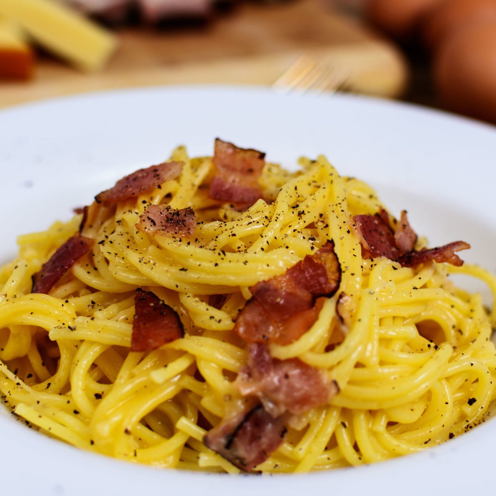

Pasta alla Carbonara

Description
One of the most known and love Italian recipes, carbonara
still divides people on the correct way to prepare it.
Here, we present the traditional recipe: the creaminess of the egg cream is perfectly balanced by
the crunchiness of guanciale, resulting in a delicious dish.
Ingredients
(4 servings)
- 400 g spaghetti (or other pasta)
- 200 g guanciale
- 8 egg yolks
- 120 g pecorino romano
- Black pepper
Steps
- Salt a pot of water and put it on the heat; when it boils, put the spaghetti in it.
- In the meantime, cut the guanciale into cubes, and cook it on low heat until it loses
some of its fat and becomes crispy.
- Mix the egg yolks, the pecorino and the black pepper until you obtain a dense paste.
- After putting the pasta in the water, use some of its water in the egg cream: it should become almost liquid.
- When the pasta is done, mix it with the guanciale and, off heat, add the egg cream, stirring continuously until
it becomes creamy.